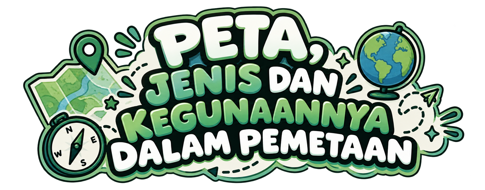
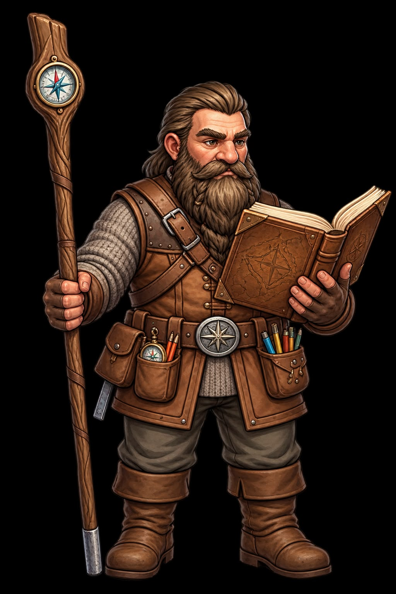
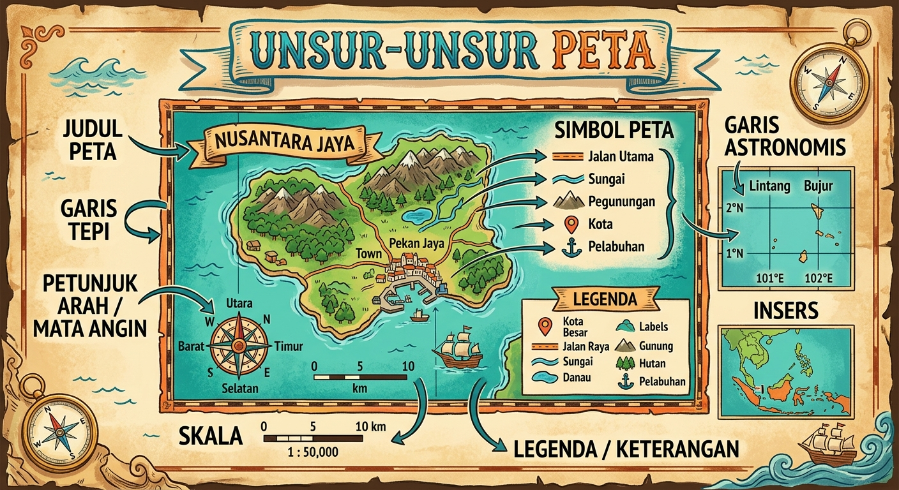
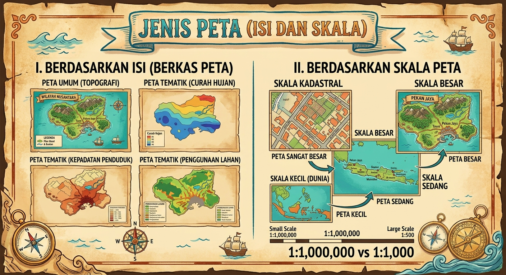
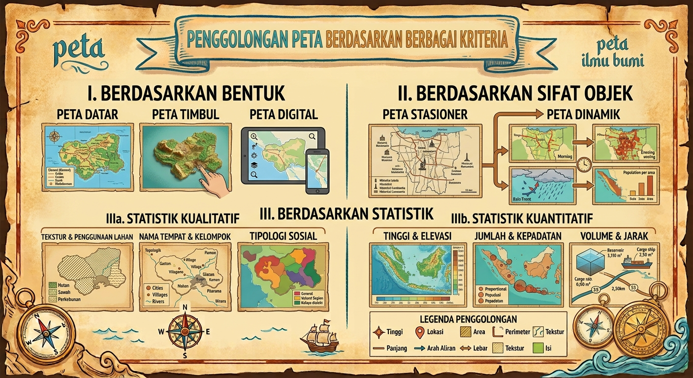
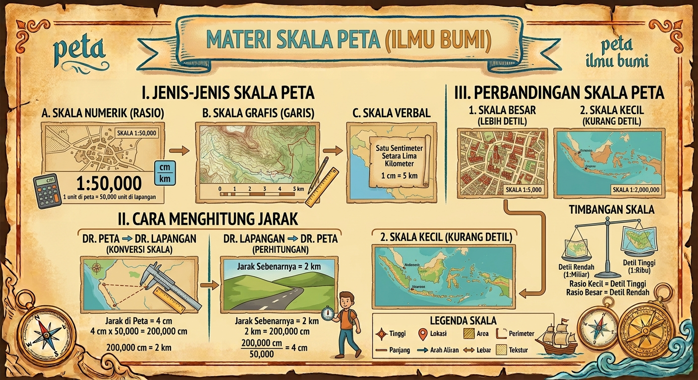

Jelajahi keajaiban ilmu kartografi interaktif! Pahami konsep dasar peta, jenis-jenis skala, fungsi spasial, hingga tantangan simulator spasial secara menyenangkan.
Mata Pelajaran
Geografi SMA
Materi Utama
Pengetahuan Peta
Mode Pembelajaran
Gim Interaktif 6-Slide
Output Belajar
Sertifikat Nilai PDF
Registrasi Penjelajah Spasial
Pilih Avatar Penjelajah

Tujuan Pembelajaran & Peta Konsep
1. Mengidentifikasi Unsur Peta
Peserta didik mampu memahami komponen kelengkapan peta seperti Judul, Skala, Legenda, Inset, Garis Astronomis, Tata Warna, dan Proyeksi Peta secara cermat.
2. Klasifikasi Jenis Peta
Peserta didik dapat mengklasifikasikan peta berdasarkan isi (Umum & Tematik), rentang Skala (Kadaster hingga Geografis), Bentuk, Sifat Data, dan Statistik.
3. Aplikasi & Penggunaan
Peserta didik mampu menganalisis pemanfaatan peta dalam perencanaan wilayah, transportasi, mitigasi bencana, serta menghitung skala peta.
Alur Belajar Modul Interaktif:
Materi Peta berdasarkan Sumber Ruangguru
Peta adalah gambaran permukaan bumi pada bidang datar yang diperkecil dengan skala tertentu. Klik komponen di bawah ini untuk melihat penjelasannya:

Judul Peta
Identitas wilayah
Skala Peta
Rasio jarak
Orientasi Arah
Arah utara
Legenda & Simbol
Arti simbol
Inset Peta
Peta penjelas lokasi
Garis Astronomis
Lintang & Bujur
Tata Warna
Simbol Ketinggian
Proyeksi Peta
3D ke 2D

A. Jenis Peta Berdasarkan Isi
-
1. Peta Umum: Menggambarkan fenomena permukaan bumi secara menyeluruh.
- Peta Topografi: Menampilkan relief & garis kontur (ketinggian).
- Peta Korografi: Gambaran wilayah luas umum (contoh: Atlas).
- Peta Geografi/Dunia: Skala sangat kecil (Globe/Peta Dunia).
-
2. Peta Khusus (Tematik): Menampilkan tema fenomena spesifik.
Contoh: Peta Kepadatan Penduduk, Peta Curah Hujan, Peta Geologi, Peta Persebaran Flora-Fauna.
B. Jenis Peta Berdasarkan Skala
1. Berdasarkan Bentuk
- Peta Datar (Planimetri): 2D di media kertas/layar.
- Peta Timbul (Stereometri): 3D menggambarkan relief nyata.
- Peta Digital: Disimpan dalam komputer/GIS/Web.
2. Berdasarkan Sifat Objek
- Peta Stasioner: Menggambarkan keadaan yang relatif stabil/tetap (Contoh: Peta Jalur Pegunungan, Kedalaman Laut).
- Peta Dinamik: Menggambarkan fenomena yang selalu berubah (Contoh: Peta Persebaran Penduduk, Peta Aliran Transportasi).
3. Berdasarkan Statistik
- Statistik Kualitatif: Menampilkan jenis data tanpa jumlah/angka (Contoh: Peta Persebaran Jenis Tanah).
- Statistik Kuantitatif: Menampilkan jumlah/persentase data (Contoh: Peta Tingkat Curah Hujan).

Interactive Scale Calculator (Rumus Skala)
Rumus Skala: Skala (S) = Jarak Peta (JP) / Jarak Sebenarnya (JS)

Gim Edukasi Interaktif Peta
Skor Total
0
Loading pertanyaan...
Klik sebuah Jenis/Skala Peta di sebelah kiri, kemudian klik Contoh/Penggunaan yang sesuai di sebelah kanan!
Masukkan kartu objek peta berikut ke dalam kategori yang benar (Peta Stasioner vs Peta Dinamik):
Objek Peta Saat Ini:
...
Hasil Pembelajaran Interaktif
SERTIFIKAT KELULUSAN PEMBELAJARAN PETA
Diberikan secara resmi kepada penjelajah spasial terdaftar:
[Nama Murid]
Kelas: [Kelas] • [Asal Sekolah]
Telah menyelesaikan seluruh rangkaian modul interaktif dan uji kompetensi gim edukasi mengenai Materi Peta, Jenis-Jenis Peta, Skala, dan Penggunaannya Kurikulum Merdeka Geografi Kelas 12 SMA.
Skor Akhir
0 / 100
Predikat
Sangat Memuaskan
Tanggal Selesai
12/09/2026
GEO-SPATIAL QUEST SYSTEM
Media Interaktif Terverifikasi
Guru Mata Pelajaran Geografi
Kelas 12 SMA / MA